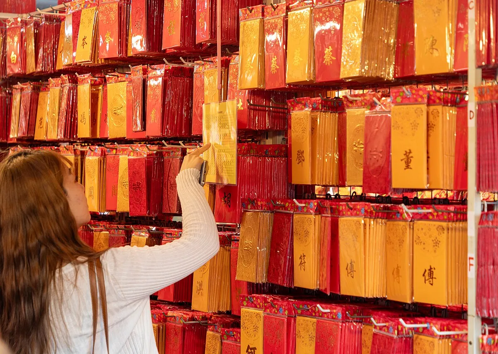
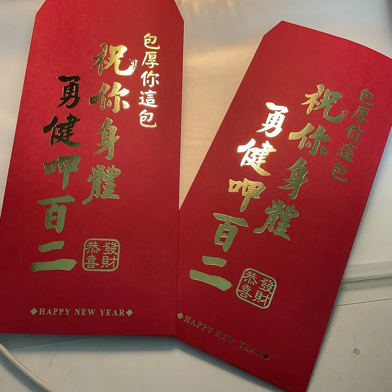
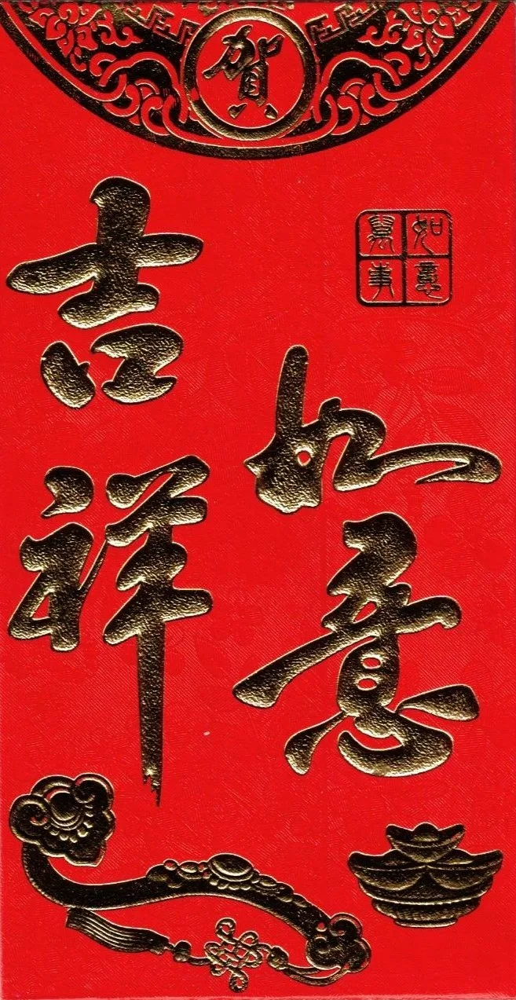

Festival Guide
Red Envelopes (Hongbao, Ang Pao): Customs, Etiquette and Lucky Amounts
A red envelope with money inside is one of the best-loved customs of Chinese New Year, from China and Hong Kong to Malaysia and Cambodia. Here is what the envelopes are called, who traditionally gives them to whom, the etiquette many families follow, and how the custom has moved onto phones.

What a red envelope is
A red envelope is a gift of money in a small red packet, given at holidays and on special occasions such as weddings, graduations and birthdays, Wikipedia explains. Chinese New Year is its main season. The custom began in China before spreading to parts of Southeast Asia and other countries with large Chinese communities.
The colour matters as much as the money: red symbolises good luck and is traditionally said to ward off evil spirits.
The custom is old. Wikipedia traces lucky money for children back to the Tang dynasty, when elders gave it to ward off evil spirits; later, coins were threaded on red string, and the name yasui qian, New Year money, appears in the Qing dynasty. In the Republic of China period, 100 coins wrapped in red paper carried the wish “May you live a hundred years!”, and because modern coins have no holes for threading, red envelopes became more common, and banknotes later replaced coins.

One custom, many names
The envelope goes by many names, depending on the language. These are the most common ones listed by Wikipedia:
| Name | Language or place |
|---|---|
| Hongbao (“red packet”) | Mandarin Chinese |
| Lai see | Cantonese, as in Hong Kong |
| Ang pau, ang pao, ang pow | Hokkien; also Malay angpau in Malaysia and Singapore, and ang pow in Thailand |
| Angpao, ampaw | The Philippines |
| Lì xì | Vietnam |
| Ang pav | Cambodia (Khmer) |
The Khmer word was borrowed directly from the southern Chinese dialects, writes Pascal Médeville in Le Petit Journal Cambodge. Other communities have adapted the idea in other colours: Wikipedia notes green envelopes for Eid al-Fitr among Malay Muslims, and purple ones for Deepavali in Singapore.
Who gives to whom
The general pattern is that elders and married people give, and children and young unmarried people receive. The details vary from place to place:
- Married to unmarried: in southern China, red envelopes are typically given by the married to the unmarried, mostly to children, Wikipedia notes. In Malaysia, Free Malaysia Today (FMT) writes, married couples, parents and others give to children, the elderly and single people.
- Adult children to parents: many people give their parents or grandparents an envelope too, and FMT's guide suggests raising the amount each year if you can afford it, or at least not lowering it.
- Employers to staff: supervisors and business owners often give red envelopes to their staff at New Year. In Singapore, Malaysia, Hong Kong and Macao, they are also given to service staff such as security guards and cleaners in the first days of the new year.
- Other occasions: guests give red envelopes at weddings, and red packets are also used to pay lion dance performers.
Red envelopes in Cambodia
In Cambodia the envelope is the ang pav. Wikipedia describes it as an important gift and a symbol of good luck from the elders; it can be cash or even a cheque, and the amount depends on the giver.
Traditionally, elders give ang pav to younger people, especially children, Médeville writes, and in many families married children also give envelopes to their parents and grandparents. Wikipedia adds that working adults no longer receive ang pav but give them to their parents and younger relatives. A Phnom Penh Post report from 2014 quoted a Chinese pagoda committee member: couples and elderly relatives give them to unmarried young people.
Chinese New Year is the main moment, but ang pav also appear at weddings, birthdays and other big celebrations, Médeville notes, and parents often keep children's gifts for school fees or savings. He stresses that amounts are relative: a sum that seems large in the countryside may look modest in Phnom Penh, and the gesture is about harmony, not competition. Wikipedia also records a protective custom of keeping the envelope near a sleeping child.
Etiquette: giving and receiving
These are the customs that most sources agree on. Families differ, so when in doubt, follow the lead of your hosts or elders.
- Use new notes. Crisp new banknotes are preferred over old ones, which is why queues form at banks before New Year, Wikipedia notes; FMT explains that new notes mark a new beginning. In Hong Kong, the note-issuing banks exchange new and good-as-new notes for lai see in the weeks before the holiday.
- Use a fresh envelope. FMT advises against reusing old red packets, and against sealing them with glue: tuck the flap in instead.
- Give with both hands. In Cambodia, Médeville writes, the envelope is offered with both hands, together with a simple wish.
- Receive with both hands and say thank you. Accept it with both hands and a smile, say thank you and, if you like, wish the giver good health and a long life.
- Do not open it in front of the giver. It is traditional to wait, out of courtesy. In Hong Kong, lai see are traditionally opened on or after the seventh day of the new year.

Lucky amounts: customs, not rules
There is no fixed price for a red envelope. Amounts depend on the giver's means, the relationship and the place, and what matters most is the gesture. Still, a few number customs are widely followed:
- Even amounts. The amount usually ends in an even digit. FMT links this to the saying hao shi cheng shuang, “good things come in pairs”, and suggests lucky even numbers such as 6 and 8.
- Eight for prosperity. Eight is associated with prosperity, a preference Médeville also notes in Cambodia.
- Avoid four. Amounts such as 40, 400 or 444 are avoided, Wikipedia notes, because the word for four sounds like the word for death.
- Odd amounts. Odd sums are traditionally associated with funerals, with nine as an exception. In some regions, though, odd amounts are favoured for weddings because they are difficult to divide.
- A coin for luck. Money is usually given in notes, but in Malaysia a coin is often added for extra luck.
For the meanings behind these numbers, see our guide to lucky numbers in Chinese culture.
Digital red envelopes
Since the mid-2010s, red envelopes have also been sent by phone. Wikipedia credits WeChat Pay with popularising the practice during Chinese New Year 2014; over the 2016 holiday, more than 32 billion virtual envelopes were sent, ten times as many as in 2015.
Central banks have encouraged the change. The Monetary Authority of Singapore, which issues about 100 million new notes a year for Lunar New Year and other festive periods, asked people in December 2021 to give e-hongbao or reuse clean notes, to cut the carbon emissions of producing, transporting and destroying new notes. In January 2026, Hong Kong announced the usual exchange of new notes for lai see from 3 to 16 February, while encouraging people to send lai see through electronic channels such as the Faster Payment System or e-wallets.
Whichever you choose, the wish is the same: a digital packet can reach relatives far away, while a paper envelope keeps the ritual of giving face to face.
Getting ready for Lunar New Year 2027
Lunar New Year 2027 falls on Saturday 6 February, the start of the Year of the Fire Goat. A few practical steps for families who give red envelopes:
- Get new notes early, before the queues at banks in the last days before New Year.
- Buy fresh envelopes, since reusing old ones is traditionally avoided.
- Decide amounts by your means, following your family's customs on even numbers, eight and four.
For the other customs of the festival, see our Lunar New Year guide.
Frequently asked questions
What is a red envelope?
A small red packet of money given as a gift at Chinese New Year and on occasions such as weddings and birthdays. The red colour stands for good luck. It is called hongbao in Mandarin, lai see in Cantonese, ang pao or ang pow in Malaysia and Singapore, and ang pav in Cambodia.
Who gives red envelopes at Chinese New Year?
Traditionally, elders and married people give to children and young unmarried relatives. Working adults often give to their parents and grandparents too, and employers may give to their staff.
How much money should I put in a red envelope?
There is no fixed amount: it depends on your means and your relationship with the person. Many families choose even amounts, favour the number 8 and avoid 4.
Why are new notes used in red envelopes?
Crisp new notes are traditionally preferred because they mark a new beginning for the new year.
Should I open a red envelope right away?
It is traditional not to open it in front of the giver. Accept it with both hands, say thank you, and open it later.
Sources and further reading
- Wikipedia: “Red envelope” — the occasions, the meaning of red, the history from the Tang dynasty to the Republic, the names in different languages, other colours, who gives to whom, service staff, even amounts, four and nine, odd amounts for weddings, coins in Malaysia, new notes, not opening in front of the giver, Hong Kong's seventh day, Cambodia's ang pav, and WeChat's digital red envelopes in 2014 and 2016.
- Le Petit Journal Cambodge: “L'ang pav cambodgien : enveloppes rouges et chance khméro-chinoise” (Pascal Médeville, 18 February 2026) — the Khmer word ang pav and its southern Chinese origin, who gives ang pav in Cambodia and on which occasions, children's money for school fees or savings, the number 8, amounts in the countryside and in Phnom Penh, and giving and receiving with both hands without opening the envelope.
- The Phnom Penh Post (Post Plus): page on Chinese New Year, family, food and prosperity — couples and elderly relatives giving ang-pow to unmarried young people, as described by a Chinese pagoda committee member.
- Free Malaysia Today: “Giving and receiving ang pows: must-dos and taboos” (21 January 2023) — who gives ang pows in Malaysia, new notes, raising amounts for parents and grandparents, receiving with both hands and thanks, even amounts such as 6 and 8, avoiding four, fresh packets and not sealing them with glue.
- Monetary Authority of Singapore: “Reduce Use of New Notes this Lunar New Year to Support the Environment” (28 December 2021) — about 100 million new notes a year for festive periods, their carbon emissions, and the call to give e-hongbao or reuse notes.
- news.gov.hk: “Lai-see services announced” (13 January 2026) — the exchange of new and good-as-new notes from 3 to 16 February 2026 and the call to send lai see through electronic channels.
Red envelope customs vary by family, region and country, amounts are personal choices rather than rules, and photos are from Wikimedia Commons under the free licences named under each picture.
Explore more: Lucky numbers in Chinese culture · Lunar New Year guide · Lucky foods for Chinese New Year · Chinese New Year 2027
← Back to the MyBirthSign Blogមគ្គុទ្ទេសក៍ពិធីបុណ្យ
អាំងប៉ាវ (Hongbao, Ang Pao)៖ ទំនៀមទម្លាប់ សុជីវធម៌ និងចំនួនប្រាក់សំណាង
ស្រោមសំបុត្រក្រហមដាក់ប្រាក់ ឬអាំងប៉ាវ ជាទំនៀមទម្លាប់មួយដែលគេចូលចិត្តជាងគេ ក្នុងបុណ្យចូលឆ្នាំចិន ចាប់ពីប្រទេសចិន និងហុងកុង រហូតដល់ម៉ាឡេស៊ី និងកម្ពុជា។ ខាងក្រោមនេះជាឈ្មោះរបស់វា អ្នកណាជាអ្នកឱ្យ និងឱ្យទៅអ្នកណាតាមប្រពៃណី សុជីវធម៌ដែលគ្រួសារជាច្រើនអនុវត្ត និងរបៀបដែលទំនៀមនេះបានផ្លាស់មកលើទូរស័ព្ទ។
អាំងប៉ាវជាអ្វី
យោងតាមការពន្យល់របស់ Wikipedia អាំងប៉ាវ គឺជាអំណោយជាប្រាក់ ដាក់ក្នុងស្រោមសំបុត្រក្រហមតូចមួយ ដែលគេឱ្យគ្នានៅថ្ងៃបុណ្យ និងក្នុងឱកាសពិសេសៗ ដូចជាពិធីមង្គលការ ពិធីបញ្ចប់ការសិក្សា និងថ្ងៃខួបកំណើត។ បុណ្យចូលឆ្នាំចិន គឺជារដូវសំខាន់របស់វា។ ទំនៀមនេះកើតចេញពីប្រទេសចិន មុននឹងរីករាលដាលទៅតំបន់មួយចំនួនក្នុងអាស៊ីអាគ្នេយ៍ និងប្រទេសផ្សេងទៀត ដែលមានសហគមន៍ចិនច្រើន។
ពណ៌ក៏សំខាន់ដូចប្រាក់ដែរ៖ ពណ៌ក្រហមជានិមិត្តរូបនៃសំណាងល្អ ហើយតាមប្រពៃណី គេនិយាយថាវាអាចបណ្ដេញវិញ្ញាណអាក្រក់។
ទំនៀមនេះមានតាំងពីយូរយារណាស់មកហើយ។ Wikipedia រៀបរាប់ថា នៅរាជវង្សថាង (Tang) មនុស្សចាស់ឱ្យប្រាក់ដល់ក្មេងៗ ដើម្បីបណ្ដេញវិញ្ញាណអាក្រក់។ ក្រោយមក គេចងកាក់ដោយខ្សែពណ៌ក្រហម ហើយឈ្មោះ yasui qian ដែលមានន័យថា «ប្រាក់ចូលឆ្នាំ» បានលេចឡើងនៅរាជវង្សឈីង (Qing)។ នៅសម័យសាធារណរដ្ឋចិន កាក់ 100 ដែលខ្ចប់ក្នុងក្រដាសក្រហម មានក្ដីប្រាថ្នាថា «សូមឱ្យមានអាយុមួយរយឆ្នាំ!» ហើយដោយសារកាក់សម័យទំនើបគ្មានរន្ធសម្រាប់ចងខ្សែ ស្រោមសំបុត្រក្រហមក៏កាន់តែពេញនិយម ហើយក្រោយមក ក្រដាសប្រាក់បានជំនួសកាក់។
ទំនៀមតែមួយ ឈ្មោះច្រើន
ស្រោមសំបុត្រនេះមានឈ្មោះច្រើន អាស្រ័យលើភាសា។ ខាងក្រោមនេះជាឈ្មោះដែលគេប្រើញឹកញាប់ជាងគេ ដែល Wikipedia បានរាយ៖
| ឈ្មោះ | ភាសា ឬទីកន្លែង |
|---|---|
| Hongbao («កញ្ចប់ក្រហម») | ភាសាចិនកុកងឺ |
| Lai see | ភាសាចិនកន្តាំង ដូចជានៅហុងកុង |
| Ang pau, ang pao, ang pow | ភាសាចិនហុកគៀន ព្រមទាំងពាក្យម៉ាឡេ angpau នៅម៉ាឡេស៊ី និងសិង្ហបុរី និង ang pow នៅប្រទេសថៃ |
| Angpao, ampaw | ប្រទេសហ្វីលីពីន |
| Lì xì | ប្រទេសវៀតណាម |
| Ang pav (អាំងប៉ាវ) | កម្ពុជា (ភាសាខ្មែរ) |
Pascal Médeville សរសេរក្នុង Le Petit Journal Cambodge ថា ពាក្យខ្មែរ «អាំងប៉ាវ» ត្រូវបានខ្ចីដោយផ្ទាល់ពីភាសាចិនភាគខាងត្បូង។ សហគមន៍ផ្សេងទៀតបានយកគំនិតនេះទៅប្រើ ជាមួយពណ៌ផ្សេង៖ Wikipedia កត់សម្គាល់ថា ជនជាតិម៉ាឡេកាន់សាសនាឥស្លាម ប្រើស្រោមសំបុត្រពណ៌បៃតង សម្រាប់បុណ្យ Eid al-Fitr ហើយនៅសិង្ហបុរី គេប្រើពណ៌ស្វាយ សម្រាប់បុណ្យ Deepavali។
អ្នកណាឱ្យ ឱ្យទៅអ្នកណា
ជាទូទៅ មនុស្សចាស់ និងអ្នករៀបការហើយ ជាអ្នកឱ្យ ហើយក្មេងៗ និងយុវវ័យដែលមិនទាន់រៀបការ ជាអ្នកទទួល។ ព័ត៌មានលម្អិតខុសគ្នាពីកន្លែងមួយទៅកន្លែងមួយ៖
- អ្នករៀបការហើយ ឱ្យអ្នកមិនទាន់រៀបការ៖ Wikipedia កត់សម្គាល់ថា នៅភាគខាងត្បូងប្រទេសចិន ជាធម្មតាអ្នករៀបការហើយ ឱ្យអាំងប៉ាវដល់អ្នកមិនទាន់រៀបការ ភាគច្រើនដល់ក្មេងៗ។ នៅម៉ាឡេស៊ី កាសែត Free Malaysia Today (FMT) សរសេរថា ប្តីប្រពន្ធ ឪពុកម្ដាយ និងអ្នកផ្សេងទៀត ឱ្យដល់ក្មេងៗ មនុស្សចាស់ និងអ្នកនៅលីវ។
- កូនពេញវ័យ ឱ្យឪពុកម្ដាយ៖ មនុស្សជាច្រើនក៏ឱ្យអាំងប៉ាវដល់ឪពុកម្ដាយ ឬជីដូនជីតារបស់ខ្លួនដែរ ហើយមគ្គុទ្ទេសក៍របស់ FMT ណែនាំឱ្យបង្កើនចំនួនប្រាក់រៀងរាល់ឆ្នាំ បើមានលទ្ធភាព ឬយ៉ាងហោចណាស់កុំបន្ថយ។
- និយោជក ឱ្យបុគ្គលិក៖ អ្នកគ្រប់គ្រង និងម្ចាស់អាជីវកម្ម តែងឱ្យអាំងប៉ាវដល់បុគ្គលិករបស់ខ្លួន នៅពេលចូលឆ្នាំ។ នៅសិង្ហបុរី ម៉ាឡេស៊ី ហុងកុង និងម៉ាកាវ គេក៏ឱ្យអាំងប៉ាវដល់បុគ្គលិកផ្ដល់សេវា ដូចជាសន្តិសុខ និងអ្នកសម្អាត ក្នុងប៉ុន្មានថ្ងៃដំបូងនៃឆ្នាំថ្មីផងដែរ។
- ឱកាសផ្សេងទៀត៖ ភ្ញៀវឱ្យអាំងប៉ាវនៅពិធីមង្គលការ ហើយគេក៏ប្រើអាំងប៉ាវ ដើម្បីបង់ប្រាក់ឱ្យអ្នកសម្ដែងរបាំតោផងដែរ។
អាំងប៉ាវនៅកម្ពុជា
នៅកម្ពុជា ស្រោមសំបុត្រនេះហៅថា អាំងប៉ាវ (ang pav)។ Wikipedia ពិពណ៌នាថា វាជាអំណោយសំខាន់ និងជានិមិត្តរូបនៃសំណាងល្អពីមនុស្សចាស់។ វាអាចជាសាច់ប្រាក់ ឬសូម្បីតែមូលប្បទានបត្រ (សែក) ហើយចំនួនប្រាក់អាស្រ័យលើអ្នកឱ្យ។
Médeville សរសេរថា តាមប្រពៃណី មនុស្សចាស់ឱ្យអាំងប៉ាវដល់មនុស្សក្មេងជាង ជាពិសេសក្មេងៗ ហើយក្នុងគ្រួសារជាច្រើន កូនៗដែលរៀបការហើយ ក៏ឱ្យអាំងប៉ាវដល់ឪពុកម្ដាយ និងជីដូនជីតារបស់ខ្លួនដែរ។ Wikipedia បន្ថែមថា មនុស្សពេញវ័យដែលធ្វើការហើយ លែងទទួលអាំងប៉ាវទៀតហើយ ប៉ុន្តែជាអ្នកឱ្យដល់ឪពុកម្ដាយ និងសាច់ញាតិដែលក្មេងជាង។ របាយការណ៍របស់កាសែត The Phnom Penh Post ឆ្នាំ 2014 បានដកស្រង់សម្ដីសមាជិកគណៈកម្មការវត្តចិនម្នាក់ថា ប្តីប្រពន្ធ និងសាច់ញាតិវ័យចាស់ ឱ្យអាំងប៉ាវដល់យុវវ័យដែលមិនទាន់រៀបការ។
បុណ្យចូលឆ្នាំចិន ជាពេលវេលាសំខាន់ជាងគេ ប៉ុន្តែ Médeville កត់សម្គាល់ថា អាំងប៉ាវក៏មាននៅពិធីមង្គលការ ថ្ងៃខួបកំណើត និងពិធីធំៗផ្សេងទៀតដែរ ហើយឪពុកម្ដាយតែងរក្សាទុកប្រាក់អាំងប៉ាវរបស់កូន សម្រាប់ថ្លៃសិក្សា ឬសន្សំទុក។ លោកសង្កត់ធ្ងន់ថា ចំនួនប្រាក់គឺអាស្រ័យលើកាលៈទេសៈ៖ ប្រាក់មួយចំនួនដែលហាក់ច្រើននៅជនបទ អាចមើលទៅតិចតួចនៅភ្នំពេញ ហើយកាយវិការនេះគឺដើម្បីសុខដុមរមនា មិនមែនដើម្បីប្រកួតប្រជែងទេ។ Wikipedia ក៏កត់ត្រាទំនៀមការពារមួយ គឺការដាក់អាំងប៉ាវនៅជិតក្មេងដែលកំពុងដេក។
សុជីវធម៌៖ ការឱ្យ និងការទទួល
ទាំងនេះជាទំនៀមទម្លាប់ ដែលប្រភពភាគច្រើនយល់ស្របគ្នា។ គ្រួសារនីមួយៗខុសគ្នា ដូច្នេះបើមិនប្រាកដ សូមធ្វើតាមម្ចាស់ផ្ទះ ឬមនុស្សចាស់របស់អ្នក។
- ប្រើក្រដាសប្រាក់ថ្មី។ Wikipedia កត់សម្គាល់ថា គេចូលចិត្តក្រដាសប្រាក់ថ្មីស្រឡាង ជាងក្រដាសប្រាក់ចាស់ ហេតុនេះហើយបានជាមានជួរវែងនៅធនាគារ មុនបុណ្យចូលឆ្នាំ។ FMT ពន្យល់ថា ក្រដាសប្រាក់ថ្មីសម្គាល់ការចាប់ផ្ដើមថ្មី។ នៅហុងកុង ធនាគារដែលចេញក្រដាសប្រាក់ ប្ដូរក្រដាសប្រាក់ថ្មី និងក្រដាសប្រាក់ស្ទើរថ្មី សម្រាប់ lai see ក្នុងរយៈពេលប៉ុន្មានសប្ដាហ៍មុនបុណ្យ។
- ប្រើស្រោមសំបុត្រថ្មី។ FMT ណែនាំកុំឱ្យប្រើអាំងប៉ាវចាស់ឡើងវិញ ហើយកុំបិទវាដោយកាវ៖ សូមញាត់គម្របចូលទៅខាងក្នុងវិញ។
- ឱ្យដោយដៃទាំងពីរ។ Médeville សរសេរថា នៅកម្ពុជា គេហុចអាំងប៉ាវដោយដៃទាំងពីរ ព្រមជាមួយពាក្យជូនពរសាមញ្ញមួយឃ្លា។
- ទទួលដោយដៃទាំងពីរ ហើយអរគុណ។ សូមទទួលវាដោយដៃទាំងពីរ និងស្នាមញញឹម និយាយពាក្យអរគុណ ហើយបើចង់ ជូនពរអ្នកឱ្យ ឱ្យមានសុខភាពល្អ និងអាយុវែង។
- កុំបើកនៅមុខអ្នកឱ្យ។ តាមប្រពៃណី គេរង់ចាំបើកនៅពេលក្រោយ ដោយការគួរសម។ នៅហុងកុង តាមប្រពៃណី គេបើក lai see នៅថ្ងៃទីប្រាំពីរនៃឆ្នាំថ្មី ឬក្រោយនោះ។
ចំនួនប្រាក់សំណាង៖ ទំនៀមទម្លាប់ មិនមែនច្បាប់
គ្មានតម្លៃកំណត់សម្រាប់អាំងប៉ាវទេ។ ចំនួនប្រាក់អាស្រ័យលើលទ្ធភាពរបស់អ្នកឱ្យ ទំនាក់ទំនង និងទីកន្លែង ហើយអ្វីដែលសំខាន់ជាងគេ គឺកាយវិការ។ ទោះយ៉ាងណា ទំនៀមទម្លាប់មួយចំនួនពាក់ព័ន្ធនឹងលេខ ត្រូវបានគេអនុវត្តយ៉ាងទូលំទូលាយ៖
- ចំនួនគូ។ ជាធម្មតា ចំនួនប្រាក់បញ្ចប់ដោយលេខគូ។ FMT ភ្ជាប់រឿងនេះទៅនឹងពាក្យស្លោក hao shi cheng shuang ដែលមានន័យថា «រឿងល្អមកជាគូ» ហើយណែនាំលេខគូសំណាង ដូចជា 6 និង 8។
- លេខប្រាំបី សម្រាប់ភាពរុងរឿង។ លេខប្រាំបីត្រូវបានភ្ជាប់ទៅនឹងភាពរុងរឿង ហើយ Médeville ក៏កត់សម្គាល់ថា គេចូលចិត្តលេខនេះនៅកម្ពុជាដែរ។
- ជៀសវាងលេខបួន។ Wikipedia កត់សម្គាល់ថា គេជៀសវាងចំនួនដូចជា 40, 400 ឬ 444 ព្រោះក្នុងភាសាចិន ពាក្យ «បួន» មានសំឡេងដូចពាក្យ «ស្លាប់»។
- ចំនួនសេស។ តាមប្រពៃណី ចំនួនសេសត្រូវបានភ្ជាប់ទៅនឹងពិធីបុណ្យសព លើកលែងតែលេខប្រាំបួន។ ប៉ុន្តែនៅតំបន់ខ្លះ គេចូលចិត្តចំនួនសេសសម្រាប់ពិធីមង្គលការ ព្រោះវាពិបាកចែកចេញពីគ្នា។
- កាក់មួយសម្រាប់សំណាង។ ជាធម្មតា គេឱ្យប្រាក់ជាក្រដាសប្រាក់ ប៉ុន្តែនៅម៉ាឡេស៊ី គេតែងបន្ថែមកាក់មួយ ដើម្បីសំណាងបន្ថែម។
សម្រាប់អត្ថន័យនៅពីក្រោយលេខទាំងនេះ សូមអានមគ្គុទ្ទេសក៍របស់យើងអំពី លេខសំណាងក្នុងវប្បធម៌ចិន។
អាំងប៉ាវឌីជីថល
ចាប់តាំងពីពាក់កណ្ដាលទសវត្សរ៍ 2010 មក គេក៏ផ្ញើអាំងប៉ាវតាមទូរស័ព្ទដែរ។ Wikipedia ចាត់ទុកថា WeChat Pay ជាអ្នកធ្វើឱ្យទម្លាប់នេះពេញនិយម ក្នុងបុណ្យចូលឆ្នាំចិនឆ្នាំ 2014។ ក្នុងរយៈពេលបុណ្យឆ្នាំ 2016 អាំងប៉ាវនិម្មិតជាង 32 ពាន់លាន ត្រូវបានផ្ញើ ច្រើនជាងឆ្នាំ 2015 ដប់ដង។
ធនាគារកណ្ដាលបានលើកទឹកចិត្តការផ្លាស់ប្ដូរនេះ។ អាជ្ញាធររូបិយវត្ថុសិង្ហបុរី (Monetary Authority of Singapore) ដែលចេញក្រដាសប្រាក់ថ្មីប្រហែល 100 លានសន្លឹកក្នុងមួយឆ្នាំ សម្រាប់បុណ្យចូលឆ្នាំចិន និងរដូវបុណ្យផ្សេងទៀត បានស្នើប្រជាជននៅខែធ្នូ 2021 ឱ្យផ្ញើ e-hongbao ឬប្រើក្រដាសប្រាក់ស្អាតឡើងវិញ ដើម្បីកាត់បន្ថយការបញ្ចេញកាបូន ពីការផលិត ការដឹកជញ្ជូន និងការបំផ្លាញក្រដាសប្រាក់ថ្មី។ នៅខែមករា 2026 ហុងកុងបានប្រកាសការប្ដូរក្រដាសប្រាក់ថ្មីសម្រាប់ lai see ដូចរាល់ឆ្នាំ ពីថ្ងៃទី 03/02/2026 ដល់ 16/02/2026 ទន្ទឹមនឹងការលើកទឹកចិត្តឱ្យប្រជាជនផ្ញើ lai see តាមមធ្យោបាយអេឡិចត្រូនិក ដូចជា Faster Payment System ឬកាបូបអេឡិចត្រូនិក (e-wallet)។
មិនថាអ្នកជ្រើសរើសបែបណាទេ ក្ដីប្រាថ្នានៅតែដដែល៖ អាំងប៉ាវឌីជីថលអាចទៅដល់សាច់ញាតិដែលនៅឆ្ងាយ ចំណែកស្រោមសំបុត្រក្រដាស រក្សាពិធីនៃការហុចឱ្យគ្នាទល់មុខ។
ត្រៀមខ្លួនសម្រាប់ចូលឆ្នាំចិន 2027
ចូលឆ្នាំចិនឆ្នាំ 2027 ធ្លាក់ចំថ្ងៃសៅរ៍ 06/02/2027 ដែលជាថ្ងៃចាប់ផ្ដើមឆ្នាំមមែ ធាតុភ្លើង។ ខាងក្រោមនេះជាជំហានជាក់ស្ដែងមួយចំនួន សម្រាប់គ្រួសារដែលឱ្យអាំងប៉ាវ៖
- រកក្រដាសប្រាក់ថ្មីឱ្យបានឆាប់ មុនពេលមានជួរវែងនៅធនាគារ ក្នុងប៉ុន្មានថ្ងៃចុងក្រោយមុនចូលឆ្នាំ។
- ទិញស្រោមសំបុត្រថ្មី ព្រោះតាមប្រពៃណី គេជៀសវាងការប្រើស្រោមសំបុត្រចាស់ឡើងវិញ។
- កំណត់ចំនួនប្រាក់តាមលទ្ធភាពរបស់អ្នក ដោយអនុវត្តតាមទំនៀមទម្លាប់គ្រួសាររបស់អ្នក ស្ដីពីលេខគូ លេខប្រាំបី និងលេខបួន។
សម្រាប់ទំនៀមទម្លាប់ផ្សេងទៀតនៃពិធីបុណ្យ សូមអាន មគ្គុទ្ទេសក៍ចូលឆ្នាំចិន របស់យើង។
សំណួរដែលគេសួរញឹកញាប់
អាំងប៉ាវជាអ្វី?
ស្រោមសំបុត្រក្រហមតូចមួយដាក់ប្រាក់ ដែលគេឱ្យជាអំណោយ នៅបុណ្យចូលឆ្នាំចិន និងក្នុងឱកាសនានា ដូចជាពិធីមង្គលការ និងថ្ងៃខួបកំណើត។ ពណ៌ក្រហមតំណាងឱ្យសំណាងល្អ។ គេហៅវាថា hongbao ជាភាសាចិនកុកងឺ lai see ជាភាសាចិនកន្តាំង ang pao ឬ ang pow នៅម៉ាឡេស៊ី និងសិង្ហបុរី និងអាំងប៉ាវ (ang pav) នៅកម្ពុជា។
តើអ្នកណាជាអ្នកឱ្យអាំងប៉ាវ នៅបុណ្យចូលឆ្នាំចិន?
តាមប្រពៃណី មនុស្សចាស់ និងអ្នករៀបការហើយ ឱ្យដល់ក្មេងៗ និងសាច់ញាតិវ័យក្មេងដែលមិនទាន់រៀបការ។ មនុស្សពេញវ័យដែលធ្វើការហើយ ក៏តែងឱ្យដល់ឪពុកម្ដាយ និងជីដូនជីតារបស់ខ្លួនដែរ ហើយនិយោជកអាចឱ្យដល់បុគ្គលិករបស់ខ្លួន។
តើគួរដាក់ប្រាក់ប៉ុន្មាន ក្នុងអាំងប៉ាវ?
គ្មានចំនួនកំណត់ទេ៖ វាអាស្រ័យលើលទ្ធភាពរបស់អ្នក និងទំនាក់ទំនងរបស់អ្នកជាមួយអ្នកទទួល។ គ្រួសារជាច្រើនជ្រើសរើសចំនួនគូ ចូលចិត្តលេខ 8 និងជៀសវាងលេខ 4។
ហេតុអ្វីគេប្រើក្រដាសប្រាក់ថ្មីក្នុងអាំងប៉ាវ?
តាមប្រពៃណី គេចូលចិត្តក្រដាសប្រាក់ថ្មីស្រឡាង ព្រោះវាសម្គាល់ការចាប់ផ្ដើមថ្មីសម្រាប់ឆ្នាំថ្មី។
តើគួរបើកអាំងប៉ាវភ្លាមៗឬទេ?
តាមប្រពៃណី គេមិនបើកវានៅមុខអ្នកឱ្យទេ។ សូមទទួលវាដោយដៃទាំងពីរ និយាយពាក្យអរគុណ ហើយបើកវានៅពេលក្រោយ។
ប្រភព និងឯកសារអានបន្ថែម
- Wikipedia: “Red envelope” — ឱកាសនានា អត្ថន័យនៃពណ៌ក្រហម ប្រវត្តិពីរាជវង្សថាង ដល់សម័យសាធារណរដ្ឋ ឈ្មោះក្នុងភាសាផ្សេងៗ ពណ៌ផ្សេងទៀត អ្នកណាឱ្យទៅអ្នកណា បុគ្គលិកផ្ដល់សេវា ចំនួនគូ លេខបួន និងលេខប្រាំបួន ចំនួនសេសសម្រាប់មង្គលការ កាក់នៅម៉ាឡេស៊ី ក្រដាសប្រាក់ថ្មី ការមិនបើកនៅមុខអ្នកឱ្យ ថ្ងៃទីប្រាំពីរនៅហុងកុង អាំងប៉ាវនៅកម្ពុជា និងអាំងប៉ាវឌីជីថលរបស់ WeChat ក្នុងឆ្នាំ 2014 និង 2016។
- Le Petit Journal Cambodge: “L'ang pav cambodgien : enveloppes rouges et chance khméro-chinoise” (Pascal Médeville, 18 February 2026) — ពាក្យខ្មែរ «អាំងប៉ាវ» និងប្រភពរបស់វាពីភាសាចិនភាគខាងត្បូង អ្នកណាឱ្យអាំងប៉ាវនៅកម្ពុជា និងក្នុងឱកាសណាខ្លះ ប្រាក់របស់កូនសម្រាប់ថ្លៃសិក្សា ឬសន្សំ លេខ 8 ចំនួនប្រាក់នៅជនបទ និងនៅភ្នំពេញ និងការឱ្យ និងទទួលដោយដៃទាំងពីរ ដោយមិនបើកស្រោមសំបុត្រ។
- The Phnom Penh Post (Post Plus): page on Chinese New Year, family, food and prosperity — ប្តីប្រពន្ធ និងសាច់ញាតិវ័យចាស់ ឱ្យអាំងប៉ាវដល់យុវវ័យដែលមិនទាន់រៀបការ តាមការពិពណ៌នារបស់សមាជិកគណៈកម្មការវត្តចិនម្នាក់។
- Free Malaysia Today: “Giving and receiving ang pows: must-dos and taboos” (21 January 2023) — អ្នកណាឱ្យអាំងប៉ាវនៅម៉ាឡេស៊ី ក្រដាសប្រាក់ថ្មី ការបង្កើនចំនួនប្រាក់ជូនឪពុកម្ដាយ និងជីដូនជីតា ការទទួលដោយដៃទាំងពីរ និងអរគុណ ចំនួនគូដូចជា 6 និង 8 ការជៀសវាងលេខបួន ស្រោមសំបុត្រថ្មី និងការមិនបិទដោយកាវ។
- Monetary Authority of Singapore: “Reduce Use of New Notes this Lunar New Year to Support the Environment” (28 December 2021) — ក្រដាសប្រាក់ថ្មីប្រហែល 100 លានសន្លឹកក្នុងមួយឆ្នាំ សម្រាប់រដូវបុណ្យ ការបញ្ចេញកាបូនរបស់វា និងការស្នើឱ្យផ្ញើ e-hongbao ឬប្រើក្រដាសប្រាក់ឡើងវិញ។
- news.gov.hk: “Lai-see services announced” (13 January 2026) — ការប្ដូរក្រដាសប្រាក់ថ្មី និងស្ទើរថ្មី ពីថ្ងៃទី 03/02/2026 ដល់ 16/02/2026 និងការលើកទឹកចិត្តឱ្យផ្ញើ lai see តាមមធ្យោបាយអេឡិចត្រូនិក។
ទំនៀមទម្លាប់អាំងប៉ាវ ខុសគ្នាតាមគ្រួសារ តំបន់ និងប្រទេស ចំនួនប្រាក់ជាជម្រើសផ្ទាល់ខ្លួន មិនមែនជាច្បាប់ទេ ហើយរូបថតមកពី Wikimedia Commons ក្រោមអាជ្ញាប័ណ្ណសេរី ដែលបានបញ្ជាក់នៅក្រោមរូបនីមួយៗ។
អានបន្ថែម៖ លេខសំណាងក្នុងវប្បធម៌ចិន · មគ្គុទ្ទេសក៍ចូលឆ្នាំចិន · ម្ហូបសំណាងសម្រាប់ចូលឆ្នាំចិន · ចូលឆ្នាំចិន 2027
← ត្រឡប់ទៅប្លុក MyBirthSign